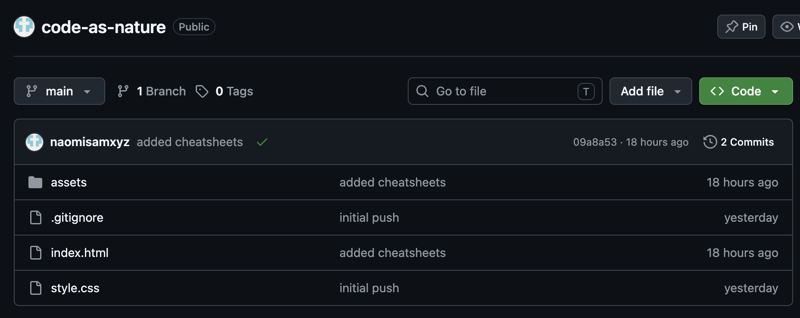

⠀⠀⠀⠀⠀⠀⠀⠀⠀⠀⠀⠀⠀⠀⠀⠀⠀⠀⠀⠀⠀⠀⠀⠀⠀⠀⠀⠀⠀⠀⠀⠀⠀⠀⠀⠀⠀⠀⠀⠀⠀⠀⢀⡀⠀⠀⠀⠀⠀⠀⠀⠀⠀⠀⠀⠀⠀⠀⠀⠀⠀ ⣄⠀⠀⠀⠀⠀⠀⠀⠀⠀⠀⠀⠀⠀⠀⠀⠀⠀⠀⠀⠀⠀⠀⠀⠀⠀⠀⠀⠀⠀⠀⠀⠀⠀⠀⣀⣤⣰⠦⠔⠛⠃⠉⠉⠉⠙⣶⢢⠀⠀⠀⠀⠀⠀⠀⠀⠀⠀⠀⠀⠀ ⠈⠳⣤⣀⠀⠀⠀⠀⠀⠀⠀⠀⠀⣀⣠⣴⡶⠟⠛⠛⠐⠢⡀⠀⠀⠀⠀⠀⠀⠀⢀⣀⣴⠮⠵⠋⠛⠋⠐⠒⠛⠠⢦⡄⡠⠴⠽⠯⠤⣀⣀⣀⣀⣀⡀⠀⠀⠀⠀⠀⠀ ⠀⠀⠈⠹⠿⣷⣶⣰⣀⣰⣶⠾⠿⠈⠉⢏⢇⠀⠀⠀⠀⠀⠀⠀⠀⠀⠀⢀⣀⡶⠉⠁⠀⠀⠀⠀⠀⠀⠀⠀⠀⠀⠀⢹⢏⠆⣰⡶⠏⠉⠉⠉⠉⠹⠿⣷⣆⣀⠀⠀⠀ ⠀⠀⠀⠀⠀⠀⠈⠉⠉⠁⠈⢙⡿⢯⠟⠉⠉⠚⠲⠤⠤⠤⠤⢤⡶⣲⠽⠃⠁⠀⠀⠀⠀⠀⠀⠀⠀⠉⠐⠢⠤⠤⠶⠟⠛⠉⠁⠀⠀⠀⠀⠀⠀⠀⠀⠀⠈⠙⠳⣄⠀ ⠀⠀⠀⠀⠀⠀⠀⠀⠀⠀⠀⠈⠳⠽⣤⣤⣤⣤⡄⠶⠴⠖⠚⠋⠁⠀⠀⠀⠀⠀⠀⠀⠀⠀⠀⠀⠀⠀⠀⠀⠀⠀⠀⠀⠀⠀⠀⠀⠀⠀⠀⠀⠀⠀⠀⠀⠀⠀⠀⠈⠆
What Git and GitHub are, before you touch either one
Saves snapshots of your project over time, so you can go back.
Like saving essay_final, essay_final2, essay_final2_forreal. Every snapshot labeled and timestamped, stored in the project itself.
Runs entirely on your computer, without an internet connection or account.
A website that stores a copy of that Git history online.
Backs up your history and makes it shareable. Also turns a folder of HTML files into a live website for free, using GitHub Pages. It's also where a lot of independent software lives, searchable by name or topic, with each repo's README explaining what it does and star counts hinting at how widely it's used.
What's on GitHub is your project's actual folder structure: the same files, organized the same way, not a compiled or exported build. Some people also attach a packaged, downloadable version of their app to the repo (via GitHub Releases).
Backup. Safely stored on GitHub's servers.
History. Every past commit is there to compare against.
Free website. GitHub Pages, no hosting fees.

Warning: GitHub has been owned by Microsoft since 2018. Since then, private repos became free for everyone, and GitHub launched Copilot, an AI tool trained partly on public code, including code whose license didn't clearly allow that, which drew real pushback from open-source developers. Your repos, activity, and code all sit on Microsoft's infrastructure now, feeding that same pipeline.